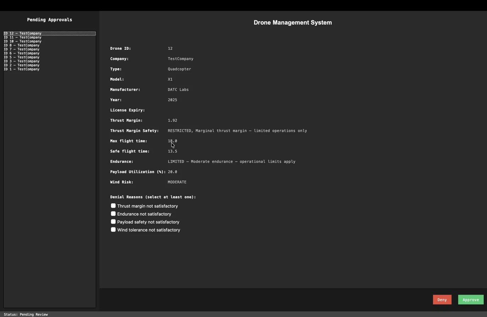
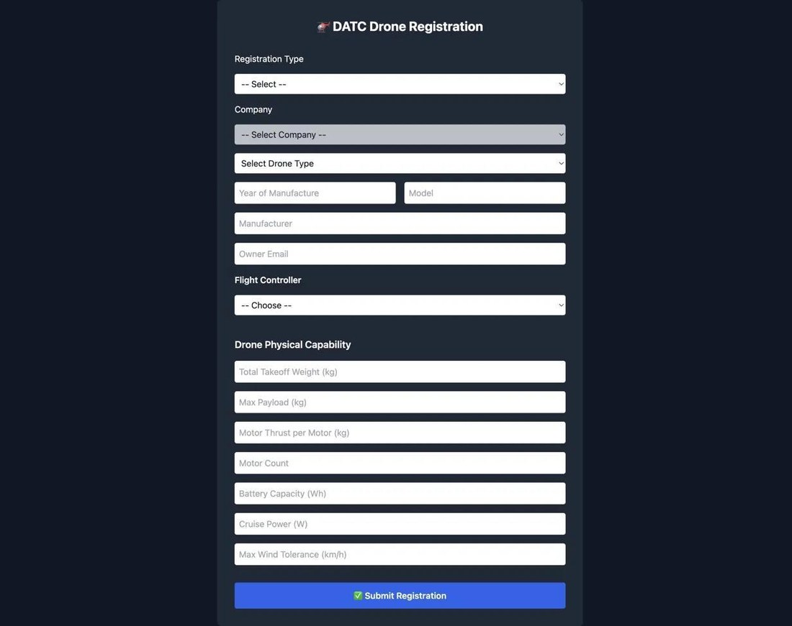

One drone. One simple question.
Unverified
Not when nobody can tell whose drone that is.
So the safe answer is no — and the rules stay restrictive.
The missing piece
The fix isn't a better drone. It's proof of whose it is.
An early attempt at that. Most of it isn't built yet.
Identify·Verify·Authorize·Monitor
01Where drones stall today
₹2.5T
India's projected drone market by 2030
38,575
drones nationwide with a verified ID today
The distance between those two numbers is trust.
Today the rules have to assume the worst.
Drone compliance in both the US and India runs on paperwork and registration, not real-time field identification. Agencies have no reliable way to tell an authorized drone from an unauthorized one while it's actually in the air.
India's own attempt, Digital Sky, is fragmented across portals and leans on operator self-declaration — unreliable enough that DGCA began migrating drone services to eGCA in 2025. Remote ID broadcast isn't mandated until 2027.
So regulators choose between under-enforcement and blanket restriction. Those restrictions stalled two of my own drone projects, which is how I ended up here.
02What aviation did in 2010
Aviation already solved this once.
Before ADS-B, controllers relied on radar — an echo off an aircraft that could not say who it was. Slower, less accurate, less certain.
ADS-B changed the direction of the information. Each aircraft broadcasts its own verified position, once a second, and the ground simply listens.
The FAA mandated it in 2010 and gave the industry a decade to fit it. The lesson isn't the radio protocol — it's the order the four things happened in.
- Visibility
- Trust
- Regulation
- Growth
03What DATC actually is
A way to check whose drone that is, mid-flight.
-
The drone
Carries a module that reports its identity continuously, in flight.
-
DATC
Checks that identity and its permission against a live central record.
-
The authority
Sees what is actually flying — and can clear it, or ground it.
That's the whole idea. Next is what each part has to get right — then how much of it exists.
04What each part has to do
Three things the current system cannot do.
-
01
The drone
An identity that holds up in flight
Registration today is a one-time paper check. The drone carries an ID that can be verified while it is airborne — owner, model, and whether the licence is still current.
-
02
DATC
Clearance that can be withdrawn mid-flight
Today the operator declares their own clearance and nothing re-checks it. Here it lives on a central platform, and can be revoked the moment it should be.
-
03
The authority
Intervention during the flight, not around it
An authority can refuse a permit beforehand or read a log afterwards. Neither reaches a drone that is already airborne. This grounds it while it matters.
05Built, and not built
This is early. Here's what's built and what isn't.


Built
Registration & safety analysis
A web form and SQLite backend that scores thrust margin, endurance, wind risk and payload use.
Built
Authority approval dashboard
A desktop app where an authority reviews registrations and approves or denies with a structured reason.
Built
Encrypted licence credential
A Fernet-encrypted QR licence. The link it points to isn't hosted yet — a known gap, not a hidden one.
Preliminary
Physical module
API calls, heartbeat and control logic over Wi-Fi. No long-range link — the plan is cellular, and it isn't built.
Planned
Real-world testing
Nothing has flown. Performance under real conditions is unknown.
06The problems I can't solve alone
What happens when the drone goes offline?
Everything above only works while the drone can reach the network. Over rural India that connection drops constantly. The drone is still flying, and something has to decide what it does next.
-
It keeps flying
It carries on, but nobody on the ground can check it any more.
Defeats the purpose -
It gets grounded
A perfectly legal flight is cut short because the signal was weak.
Repeats the original problem
What I've considered
- Give the drone a permission slip to carry, good for a set time
- Let it keep flying, but only inside a much smaller area
- Record everything while offline, hand it over when the link is back
- A backup radio link — not built yet; Wi-Fi is as far as it goes
Also unsolved
- Adoption. If authorities are never required to check it, none of this matters.
- Central records. Putting every drone owner's details in one database raises privacy questions that need answering first.
Where I could use help
- Kept a system running when the network doesn't. What broke?
- Taken something through a regulator. Who has to be convinced first?
- Handled personal data at scale. What would you insist on?
07The ask
Fifteen minutes would help a lot.
Vihaan Mittal — Grade 9, Pathways School Gurgaon.
Email meor copy it —